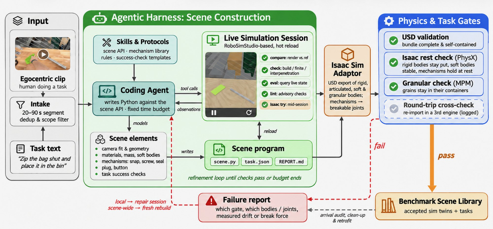
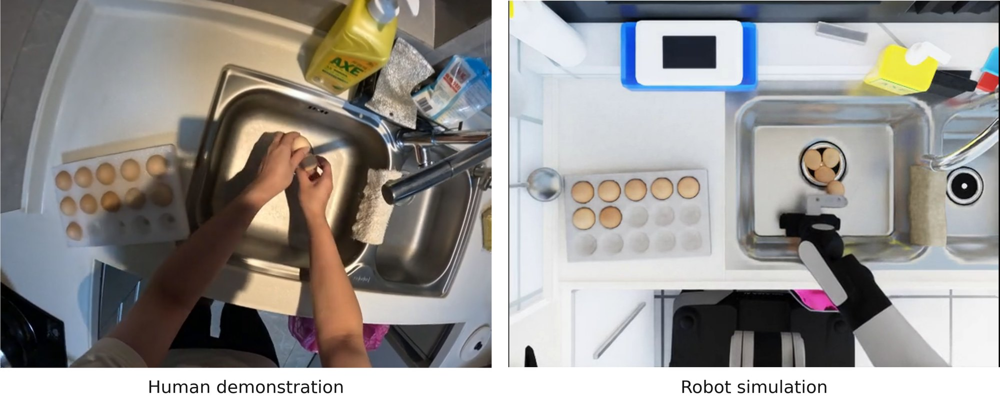
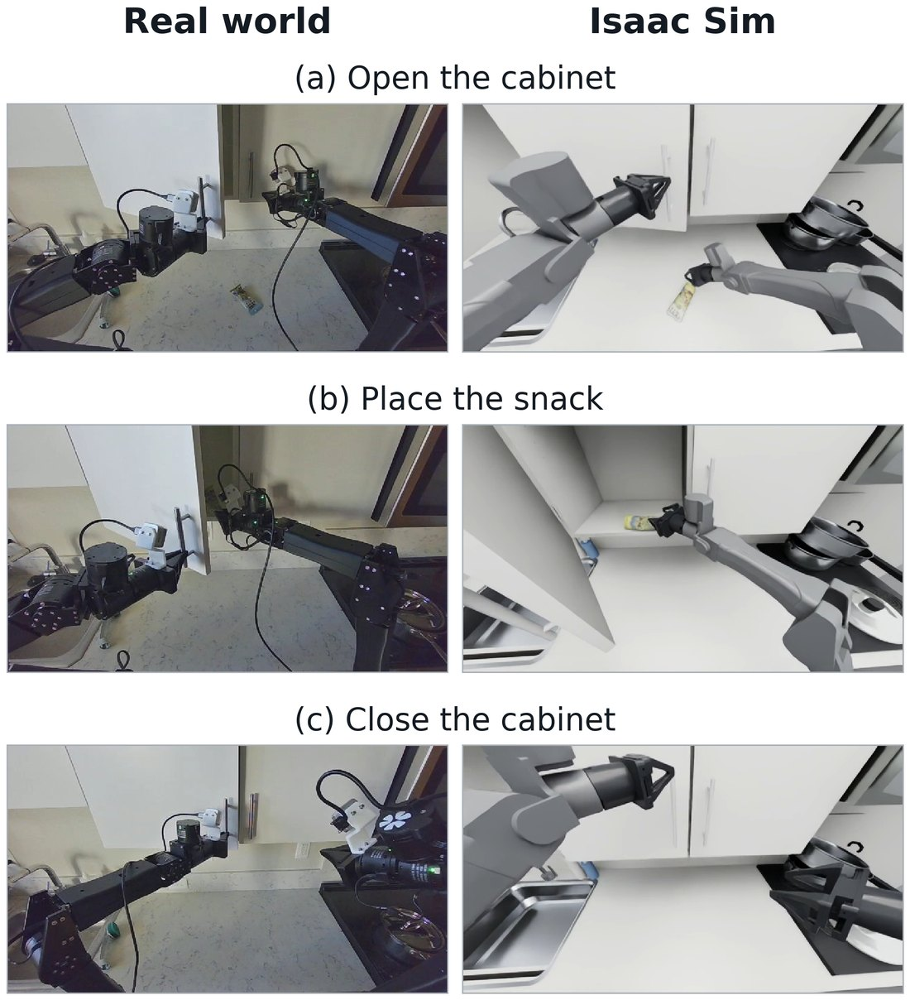

Benchmarking Zero-Shot Embodied Foundation Models
1,000 simulation tasks rebuilt from egocentric videos of people doing their real work, for measuring how robot foundation models perform out of the box.
Today's frontier systems are far from reliable on real work. On the full 1,000-scene suite, GPT-6 Astra succeeds on 8.3% of scenes and Dream-1 on 3.2%, and almost every success is a short pick-and-place of a single rigid object. Neither model completes any task involving insertion, screwing, opening or closing, disassembly, stacking or folding.
Evaluating zero-shot robot policies requires diverse tasks, explicit embodiment interfaces, and evidence that simulated outcomes are informative about physical execution. We introduce GenBench-∞, a benchmark of an initial 1,000 simulation scenes derived from egocentric videos of human activities, which we will keep extending on this page. An agentic real-to-simulation pipeline builds the interactive scenes with human-in-the-loop checks, and asynchronous execution lets systems with different inference costs be evaluated together. We report three sets of experiments: a separate 50-scene benchmark that compares six systems across four embodiments, with human-referenced timing and deployment-cost analysis under explicit assumptions; the full 1,000-scene suite with Dream-1 and GPT-6 Astra on dual YAM arms; and a sim-to-real study in our lab. Current foundation models are far from reliable: GPT-6 Astra succeeds on 8.3% of the 1,000 scenes and Dream-1 on 3.2%, almost only on short tasks.
1,000 task instances built from egocentric recordings across six sources, in 23 categories with 7,600 machine-checkable success conditions, for evaluating policies on four embodiments without benchmark-specific adaptation.
A coding agent builds each scene as a program inside a harness of tools, primitives and rules, with independent physics checks and a repair loop. 94.1% of attempted scenes are accepted, at about 1.3 GPU-slot hours each.
Six systems on four embodiments remain far from reliable. On five lab tasks run both in simulation and on real robots, binary task success correlates at r = 0.81 between the two.
Designed benchmarks contain the tasks their authors chose, usually tens to a few hundred of them. Egocentric video lets the task distribution follow what people actually do, including the long tail of unusual objects, tools and steps. Our self-collected recordings come from workers on factory and packaging lines during regular shifts, without scripted instructions; public clips come from Open-AoE, HoloAssist, CaryX and RekaDaily-10k. Of 7,072 indexed segments, 3,717 (306 h) passed a written robot-feasibility rubric and a three-view adversarial review. The ∞ in the name reflects that the benchmark is not fixed: as more video is recorded, the same pipeline turns it into new scenes at about one GPU-hour each.
| Benchmark | Task source | Platform | Bimanual | Tasks | Scenes | Real-world validation |
|---|---|---|---|---|---|---|
| LIBERO | Procedural | MuJoCo | – | 130 | N/R | None |
| BEHAVIOR-1K | Crowd-ranked activities | Isaac Sim | ✓ | 1,000 | 50 | 1 task, digital twin |
| RoboCasa365 | LLM-proposed, author-built | MuJoCo | – | 365 | 2,500 | None |
| RoboDojo | Capability-designed | Isaac Sim | ✓ | 42 + 18 real | N/R | 18 real tasks, unpaired |
| RobotArena∞ | Robot demo videos | Genesis | – | N/R | ~100 | 1 task, 3 policies |
| GenBench-∞ (ours) | Egocentric human video | Isaac Sim | ✓ | 1,000 | 1,000 | 5 tasks, paired; success r = 0.81 |
Counts as reported by each paper; N/R = not reported. The table positions benchmarks by what they measure; it is not a ranking.
Reconstruction recovers appearance, but not the mass, friction, articulation, deformable materials and mechanisms a policy interacts with, and egocentric work video, with a moving head-worn camera and hands occluding the objects, rarely gives a clean view to reconstruct from. Instead, a coding agent models each scene directly as a program, using the clip as a reference rather than as geometry.

Each 20–90 s clip becomes a scene.py plus a task file of success conditions. The agent works in a live session that reloads on every save, compares renders from a camera fitted to the clip against the video, and steps the physics to catch instability, interpenetration and drift.
Mechanism primitives (snaps, seated screws, zippers, plugs, buttons) each carry a break force and a state check. Three rules: textures carry only an object's own print, at least one success condition is false as built, and every departure from the clip is written into a report.
A scene counts only if it holds in an engine it was not built in. In Isaac Sim, rigid bodies must stay within a few millimetres at rest, soft bodies must neither fall through nor fly apart, every mechanism must hold at three times its load, and granular material (MPM) must stay in its container.
No training or fine-tuning on GenBench scenes, demonstrations or outcomes. Policies may have prior general or embodiment-specific training. Because pretraining data is opaque, we do not claim the tasks are unseen, only that the benchmark supplies no data for them.
Policies issue joint-position and gripper targets at 20 Hz; physics keeps running during inference while the last targets are held, so systems with very different inference costs are evaluated together. Heterogeneous scenes share one simulator process per GPU.
Three isolated reviewers (geometry, task completion, false positives) judge each trial; success needs at least two complete-success votes. Equally weighted milestones, frozen before execution, give partial credit. Agreement with a human voter: 98% over 150 episodes, Cohen's κ = 0.91.
Dream-1 and GPT-6 Astra on all 1,000 scenes in Isaac Sim 6.2 with Isaac Lab 3.0, one scored trial per scene and model, capped at 300 simulated seconds.
| Scenes | Dream-1 | GPT-6 Astra | ||
|---|---|---|---|---|
| Success | Milestone | Success | Milestone | |
| All (1,000) | 32 (3.2%) | 3.8 | 83 (8.3%) | 10.0 |
| Short (248) | 32 (12.9%) | 13.6 | 82 (33.1%) | 35.0 |
| Medium (457) | 0 (0.0%) | 0.6 | 1 (0.2%) | 2.0 |
| Long (295) | 0 (0.0%) | 0.5 | 0 (0.0%) | 1.4 |
Short, medium and long tasks name 1–2, 3–4 and 5+ sub-goals. Both models succeed on 26 scenes, only Astra on 57, only Dream-1 on 6, neither on 911. On the 26 shared successes, Astra averages 7.5 min and $2.28 of API cost per task; Dream-1 averages 5.1 min and $0.06, 38× cheaper.
Tasks simplify the source activity while keeping its manipulation requirements; an activity that transfers six eggs, for example, becomes transferring one egg from the sink into the tray. LLM systems act through the Nomad interface; Dream-1, π0.5 and MolmoAct2 use their own adapters. A completion counts only when simulator predicates pass and visual review confirms the goal.
| System | Robot | Success | Time (min) | |
|---|---|---|---|---|
| GPT-6 Astra | R1 | 10 (20.0%) | 27.7 | |
| GPT-6 Astra | R1 Pro | 9 (18.0%) | 41.9 | |
| GPT-6 Astra | Panda | 10 (20.0%) | 17.1 | |
| Gemini Argon 4 | R1 | 7 (14.0%) | 15.4 | |
| Gemini Argon 4 | R1 Pro | 5 (10.0%) | 21.7 | |
| Gemini Argon 4 | Panda | 7 (14.0%) | 20.5 | |
| Claude Fable 5.1 | R1 | 3 (6.0%) | 35.8 | |
| Claude Fable 5.1 | R1 Pro | 0 (0.0%) | – | |
| Claude Fable 5.1 | Panda | 5 (10.0%) | 21.2 | |
| GPT-6 Astra | YAM | 2 (4.0%) | 6.9 | |
| Dream-1 | YAM | 7 (14.0%) | 4.8 | |
| MolmoAct2 | YAM | 2 (4.0%) | 3.2 | |
| π0.5 | YAM | 0 (0.0%) | – |
Out of 50 tasks per row. Time is the mean elapsed time of the fastest accepted run per task, including inference waiting. Together, the frontier configurations succeed in 56 of 450 cells and cover 15 of the 50 scenes.

| System | Scenes | API | Robot | Total |
|---|---|---|---|---|
| GPT-6 Astra | 14 | $4.66 | $5.46 | $10.12 |
| Gemini Argon 4 | 11 | $0.95 | $1.95 | $2.90 |
| Claude Fable 5.1 | 6 | $6.12 | $2.08 | $8.20 |
| Dream-1 | 7 | $0.18 | $0.097 | $0.28 |
| MolmoAct2 | 2 | $0.00 | $0.21 | $0.21 |
Mean cost per selected successful scene completion. Robot cost allocates purchase price over 5,000 occupied hours; failures, retries, compute, maintenance and supervision are excluded. For reference, a person transfers one egg in about 3.5 s, about $0.025 at a fully loaded $26/hour.
We recorded five egocentric videos of tasks in our lab, built their scenes with the same pipeline, and ran Dream-1 and GPT-6 Astra on dual YAM arms five times per task, in simulation and on the real robots.
| Task | Dream-1 | GPT-6 Astra | ||
|---|---|---|---|---|
| Real | Sim | Real | Sim | |
| Cubes into a box | 90.0 | 100.0 | 70.0 | 50.0 |
| Banana onto a plate | 100.0 | 90.0 | 90.0 | 20.0 |
| Wipe a beam | 60.0 | 40.0 | 60.0 | 13.3 |
| Snack into a cabinet | 86.7 | 73.3 | 26.7 | 26.7 |
| Pack objects | 10.0 | 20.0 | 0.0 | 0.0 |
| Mean | 69.3 | 64.7 | 49.3 | 22.0 |
Mean task-milestone completion (%) over five trials per model and setting.
Simulation preserves Dream-1's higher aggregate score and tracks it closely (64.7% vs. 69.3%), but understates GPT-6 Astra's (22.0% vs. 49.3%) and does not reproduce per-task scores uniformly. Camera matching is approximate and contact physics remain unqualified for wiping, cabinet manipulation and packing, so these five-task comparisons are descriptive.

A sample of benchmark scenes. Each card shows the simulation scene; hover or tap it to see the first frame of the source video it was built from.
Egocentric sources over-represent some activities and mostly show successful human demonstrations. Video does not uniquely determine mass, friction, compliance or occluded geometry, so these are estimates, and simulation validity may not extend beyond the tasks, embodiments and contact regimes we test. Generated success checks can also be wrong in ways the physics gates do not catch.
A BibTeX entry, the paper, the scenes and the evaluation code will be posted here after the review period.